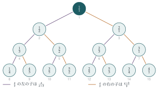

STEP III 2020、第8問
先に進む前に問題を読んでおこう。問題は、OCRが配布している2020年のSTEP問題一式（zipファイル）のSTEP IIIに収録されている： www.ocr.org.uk/Images/696589-2020-past-papers.zip
導入
正の分数をすべて、一つずつ順に並べて、どの分数もちょうど一回ずつ現れるようにできるだろうか。それは不可能に思える。どの二つの分数の間にも無数の分数があるので、書き出すべき「次の」分数というものが存在しないからである。しかしカントール（Cantor）は1870年代に、それでも並べることができると示した。これは、ある厳密な意味において、分数は整数より多くはないということを意味する。
カントールのリストは不格好であった。\(\frac12\) だけでなく \(\frac{2}{4}\) も含まれていて、重複を消していく必要があったのである。この問題では、ばかばかしいほど単純な規則をもつ数列から、重複のまったくないリストを作る。このリストは2000年に Neil Calkin と Herbert Wilf によって発表されたが、数列そのものは1858年に Moritz Stern によって研究されていた。
取りかかる前に
何かを証明する前に、最初の15項ほどを計算してみよう。比 \(u_n / u_{n+1}\) について何に気づくだろうか。
数列は \[1,\ 1,\ 2,\ 1,\ 3,\ 2,\ 3,\ 1,\ 4,\ 3,\ 5,\ 2,\ 5,\ 3,\ 4,\ 1,\ 5,\ \ldots\] と始まり、比 \(u_n / u_{n+1}\) は \[\tfrac11,\ \tfrac12,\ \tfrac21,\ \tfrac13,\ \tfrac32,\ \tfrac23,\ \tfrac31,\ \tfrac14,\ \tfrac43,\ \tfrac35,\ \tfrac52,\ \tfrac25,\ \tfrac53,\ \tfrac34,\ \tfrac41,\ \ldots\] となる。どの分数も既約分数（lowest terms）の形で現れ、重複するものはない。この問題は、これが永遠に続くこと、そしてどの正の分数もいずれ現れることを証明せよというものである。
順を追って解く
段階 1 奇数番目が偶数番目に勝る
隣り合う二項は \((u_{2k}, u_{2k+1})\) または \((u_{2k+1}, u_{2k+2})\) のいずれかである。
これらの組をそれぞれ \(u_k\) と \(u_{k+1}\) を用いて表せ。どちらの項が大きいか。
\((u_{2k}, u_{2k+1}) = (u_k,\ u_k + u_{k+1})\) であり、\((u_{2k+1}, u_{2k+2}) = (u_k + u_{k+1},\ u_{k+1})\) である。すべての項は正の整数である（簡単な帰納法（induction）で示せる）から、\(u_k + u_{k+1}\) は \(u_k\) と \(u_{k+1}\) のどちらよりも大きい。唯一の例外は最初の組 \((u_1, u_2) = (1, 1)\) であり、\(u_1\) は直接定義されているので、どちらの形にも当てはまらない。■
段階 2 隣り合う項は互いに素である
\(d > 1\) が \(u_{2k}\) と \(u_{2k+1}\) の両方、すなわち \(u_k\) と \(u_k + u_{k+1}\) の両方を割り切るとする。\(d\) はほかに何を割り切るか。
\(d\) は \((u_k + u_{k+1}) - u_k = u_{k+1}\) を割り切るので、\(d\) は数列のより前にある隣り合う組 \(u_k, u_{k+1}\) を割り切る。もう一方の場合もまったく同様である。\(d\) が \(u_k + u_{k+1}\) と \(u_{k+1}\) を割り切るならば、\(d\) は \(u_k\) を割り切る。
したがって、隣り合う組の公約数は、より前の組へ、さらに前の組へと受け渡されていく。位置が永遠に減り続けることはできない（またしても整列性（well-ordering）である）から、最終的に \(d\) は最初の組 \(u_1 = u_2 = 1\) を割り切らなければならなくなる。これは \(d > 1\) に対しては不可能である。よって、隣り合う組はすべて互いに素（coprime）である。■
段階 3 同じ組が二度現れることはない
段階 1 から有用なことがわかる。隣り合う組 \((a, b)\) を見れば、\(a\) が奇数番目にあるか偶数番目にあるかを判定できるのである。どのようにしてか。さらに、段階 2 の意味で、その直前に来る組を復元できるだろうか。
\(a < b\) ならば、（段階 1 により）\(b\) は奇数番目にあるので、ある \(k\) に対してこの組は \((u_{2k}, u_{2k+1}) = (u_k, u_k + u_{k+1})\) であり、「親」の組 \((u_k, u_{k+1})\) は \((a,\ b - a)\) である。\(a > b\) ならば、この組は \((u_{2k+1}, u_{2k+2})\) であり、その親は \((a - b,\ b)\) である。\(a = b\) ならば、段階 1 よりこの組はまさに最初の組 \((1,1)\) でなければならない。
よって、最初の組以外の隣り合う組はそれぞれ、その親の組と親の位置を決定する（この構造は図 1.8.1 の木として見ることができる）。子が \(2k\) 番目または \(2k+1\) 番目にあるとき、親は \(k\) 番目にある。いま、\((a, b)\) が二つの異なる位置に現れたとしよう。するとそれらの親は同じ組が二つの位置に現れたものとなり、その親もまた同様であり、以下同様である。これをさかのぼっていくと、最終的に \((1,1)\) が \(1\) 番目以外の位置に見つかることになるが、これは段階 1 により否定される。■
段階 4 互いに素な組はすべて現れる
互いに素なある組 \((a, b)\) が、隣り合う二項として決して現れないとする。そのような組のうち、どれに注目すべきだろうか。
「欠けている」互いに素な組のうち、\(a + b\) の値が最小のものをとる。すなわち最小反例（minimal counterexample）である。これは実際に現れる \((1,1)\) ではありえないので、\(a \neq b\) である（互いに素かつ等しいならば \(a = b = 1\) となる）。
\(a > b\) の場合：組 \((a - b, b)\) は互いに素であり（\(a-b\) と \(b\) の公約数は \(a\) を割り切る）、その和 \(a\) は \(a + b\) より小さい。最小性によりこの組は現れ、その位置を \(k, k+1\) とする。しかしすると \(u_{2k+1} = u_k + u_{k+1} = a\) かつ \(u_{2k+2} = u_{k+1} = b\) となり、結局 \((a, b)\) は現れることになる。
\(a < b\) の場合：同様に \((a, b - a)\) がある位置 \(k, k+1\) に現れ、すると \((u_{2k}, u_{2k+1}) = (a, b)\) となる。
いずれの場合も矛盾である。よって、互いに素な正の整数の組はすべて、隣り合う二項として現れる。■
（問題の小問 (iv) は、これを無限降下法（descent）の形で述べている。すなわち、欠けている組があれば、より小さな欠けている組が生じるというものである。これは同じ議論を逆向きに読んだものにほかならない。）
段階 5 すべての分数のリスト
すべての正の有理数（rational number）は、\(a, b\) が互いに素であるような既約分数 \(a/b\) としてただ一通りに表せる。段階 4 により、\((a, b)\) はある隣り合う組 \((u_n, u_{n+1})\) として現れるので、\(f(n) = a/b\) である。すなわち \(f\) の値域はすべての正の有理数である。段階 3 によりそれは一度しか現れず、段階 2 によりすべての値 \(f(n)\) はすでに既約分数の形であるから、異なる二つの \(n\) が同じ分数を与えることはない。したがって \(f\) は正の整数全体から正の有理数全体への全単射（bijection）であり、逆関数をもつ。■
振り返り
降下法とその逆。公約数や重複する組は、数列の始まりへとさかのぼって追跡された。欠けている組は、最小反例を用いて前向きに組み立てることで処理された。
全単射には二つの半分が必要である。「すべての分数が現れる」（全射（onto））と「どの分数も二度は現れない」（単射（one-to-one））は別々の主張であり、別々に証明される。
まず計算せよ。15項を書き出したことで主張が信じられるものになり、証明を推し進めた親子構造が見えてきた。
背後にある数学
正の分数を木の形に並べる。一番上に \(\frac11\) を置き、各分数 \(\frac{a}{b}\) に二つの子、すなわち左に \(\frac{a}{a+b}\)、右に \(\frac{a+b}{b}\) を与える。この木を一行ずつ、左から右へ読むと、ちょうどこの問題のリスト \(f(1), f(2), f(3), \ldots\) が得られる（図 1.8.1）。段階 3 はすべての分数がただ一つの親をもつことを述べ、段階 4 はすべての分数が木の中にあることを述べている。2003年に Moshe Newman は、木すら必要ないことを発見した。リストの各分数は、一つ前の分数から \[x_{n+1} = \frac{1}{2\lfloor x_n \rfloor - x_n + 1}.\] によって計算できるのである。

無限の大きさの違い
このように並べ上げることのできる集合を可算（countable）であるという。分数は可算である。分数は整数よりはるかに多いように思えるので、これは驚くべきことである。大学の最初の学期には、カントールの対角線論法（diagonal argument）にも出会うだろう。これは実数が可算でないこと、すなわち実数のどんなリストも必ずどれかを取りこぼすことを示すものである。したがって、無限には本当に異なる大きさがあり、実数は有理数より真に大きな無限をなす。これは大学1年次の講義で出会う結果の中でも、とりわけ驚くべきものの一つである。
Stern の数列
数列 \(u_n\) は Stern の二原子数列（Stern’s diatomic sequence）であり、ほかにもさまざまな顔をもつ。たとえば \(u_{n+1}\) は、各べきを高々2回まで用いて \(n\) を \(2\) のべきの和として表す方法の数に等しい。この数列は Stern–Brocot 木（Stern–Brocot tree）や、無理数の最良有理近似を与える連分数（continued fraction）とも深く関係している。
思考のスキル
二つの集合が同じ大きさであることを示すには、両者を過不足なく対応させよ。すなわち、対象の集合のすべての元に対応がつくこと（全射）と、どの元にも二重に対応がつかないこと（単射）を証明せよ。
全単射は有限・無限を問わず数え上げの基礎であり、大学では絶えず用いることになる。ここでは、どちらの半分も、構造をその出発点までさかのぼることで証明された。
次の一歩
分数を見つける。\(f(n) = \frac{3}{5}\) となるのはどの \(n\) か。また \(f(n) = \frac{5}{3}\) となるのはどの \(n\) か。親の規則を用いて \(\frac11\) までさかのぼれ。
Newman の公式。\(x_1 = 1\) から始めて、Newman の公式がリストの最初の10個の分数を生み出すことを確かめよ。
カントールの対角線論法。\(0\) と \(1\) の間のすべての実数を小数で書いたリストがあるとする。リストの \(n\) 番目の数と \(n\) 桁目が異なるような小数を構成せよ。これがリストの不完全さを示すのはなぜか。（\(0.0999\ldots = 0.1\) のような小数にはどのような注意が必要か。）
可算和集合。 発展 正の整数の組 \((m, n)\) 全体の集合が可算であることを、正の整数全体との全単射を具体的に与えることで示せ。（\(2^{m-1}(2n-1)\) を試してみよ。）
さらに学ぶために
Neil Calkin & Herbert Wilf, 「Recounting the rationals」（American Mathematical Monthly, 2000）。4ページで、全編が読みやすい。
Aigner & Ziegler, Proofs from THE BOOK（邦訳『天書の証明』）、第 17 章「Sets, functions, and the continuum hypothesis」（集合、関数、連続体仮説）。Calkin–Wilf 木が取り上げられている。
Ian Stewart & David Tall, The Foundations of Mathematics（Oxford University Press）。大学1年次の講義と同様に、可算性、カントール、実数を扱う。